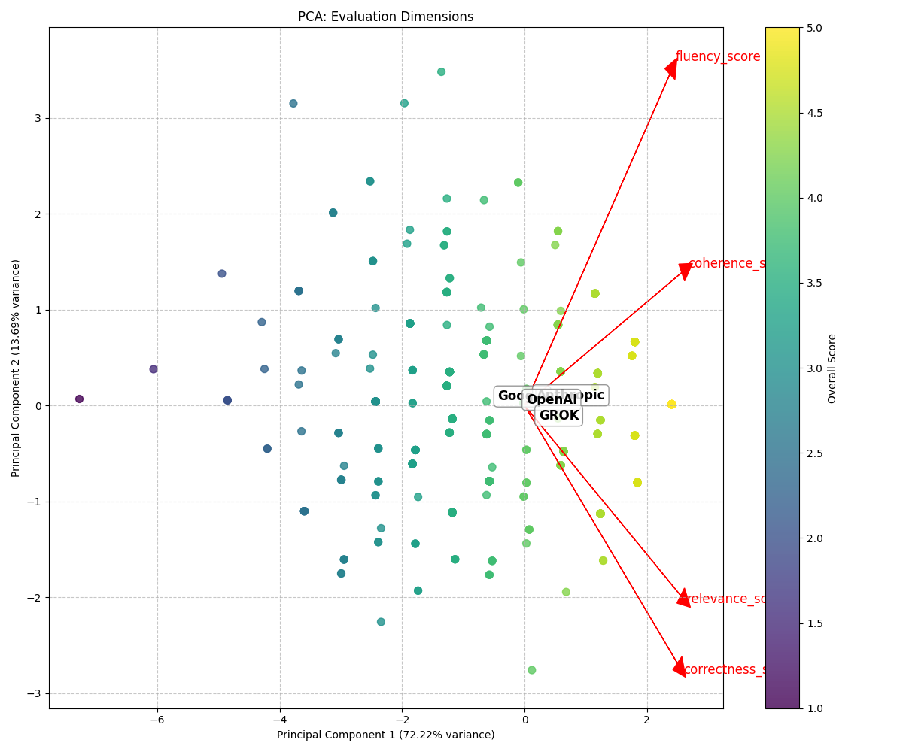

Score Distributions
Distribution of scores across all evaluations:

Generated on: 2025-07-25 20:26:34
Total evaluations analyzed: 857
Vendors included: Anthropic, GROK, Google, OpenAI
Models included: Google gemini-1.5-pro, Anthropic claude-3-opus-20240229, OpenAI gpt-4.1-nano, GROK grok-3-mini
| Total Evaluations | Unique Evaluators | Unique Cases | Unique Scenarios | Vendors | Models | |
|---|---|---|---|---|---|---|
| Summary | 857 | 44 | 5 | 5 | 4 | 4 |
Distribution of scores across all evaluations:
| mean | std | count | |
|---|---|---|---|
| vendor | |||
| Anthropic | 4.084491 | 0.646171 | 216 |
| GROK | 4.096698 | 0.705489 | 212 |
| 3.823256 | 0.764375 | 215 | |
| OpenAI | 4.012850 | 0.659980 | 214 |
| relevance_score | correctness_score | fluency_score | coherence_score | |||||||||
|---|---|---|---|---|---|---|---|---|---|---|---|---|
| mean | std | count | mean | std | count | mean | std | count | mean | std | count | |
| vendor | ||||||||||||
| Anthropic | 4.138889 | 0.727638 | 216 | 4.013889 | 0.762366 | 216 | 4.120370 | 0.803684 | 216 | 4.064815 | 0.810089 | 216 |
| GROK | 4.235849 | 0.779499 | 212 | 4.113208 | 0.764382 | 212 | 4.018868 | 0.886776 | 212 | 4.018868 | 0.859639 | 212 |
| 3.906977 | 0.848692 | 215 | 3.744186 | 0.934615 | 215 | 3.860465 | 0.890799 | 215 | 3.781395 | 0.913874 | 215 | |
| OpenAI | 4.065421 | 0.747717 | 214 | 3.967290 | 0.795442 | 214 | 4.000000 | 0.793163 | 214 | 4.018692 | 0.786999 | 214 |
One-way ANOVA tests were conducted to determine if there are statistically significant differences between vendors across evaluation dimensions:
| Dimension | F-statistic | p-value | Significant |
|---|---|---|---|
| Relevance | 6.8126 | 0.0002 | Yes |
| Correctness | 7.7965 | 0.0000 | Yes |
| Fluency | 3.4530 | 0.0162 | Yes |
| Coherence | 4.9611 | 0.0020 | Yes |
| Overall | 7.0715 | 0.0001 | Yes |
Where significant differences were found, Tukey HSD post-hoc tests were conducted to identify which specific vendor pairs differed significantly.
| mean | std | count | ||
|---|---|---|---|---|
| vendor | model | |||
| Anthropic | claude-3-opus-20240229 | 4.084491 | 0.646171 | 216 |
| GROK | grok-3-mini | 4.096698 | 0.705489 | 212 |
| gemini-1.5-pro | 3.823256 | 0.764375 | 215 | |
| OpenAI | gpt-4.1-nano | 4.012850 | 0.659980 | 214 |
| relevance_score | correctness_score | fluency_score | coherence_score | ||||||||||
|---|---|---|---|---|---|---|---|---|---|---|---|---|---|
| mean | std | count | mean | std | count | mean | std | count | mean | std | count | ||
| vendor | model | ||||||||||||
| Anthropic | claude-3-opus-20240229 | 4.138889 | 0.727638 | 216 | 4.013889 | 0.762366 | 216 | 4.120370 | 0.803684 | 216 | 4.064815 | 0.810089 | 216 |
| GROK | grok-3-mini | 4.235849 | 0.779499 | 212 | 4.113208 | 0.764382 | 212 | 4.018868 | 0.886776 | 212 | 4.018868 | 0.859639 | 212 |
| gemini-1.5-pro | 3.906977 | 0.848692 | 215 | 3.744186 | 0.934615 | 215 | 3.860465 | 0.890799 | 215 | 3.781395 | 0.913874 | 215 | |
| OpenAI | gpt-4.1-nano | 4.065421 | 0.747717 | 214 | 3.967290 | 0.795442 | 214 | 4.000000 | 0.793163 | 214 | 4.018692 | 0.786999 | 214 |


One-way ANOVA tests were conducted to determine if there are statistically significant differences between models across evaluation dimensions:
| Dimension | F-statistic | p-value | Significant |
|---|---|---|---|
| Relevance | 6.8126 | 0.0002 | Yes |
| Correctness | 7.7965 | 0.0000 | Yes |
| Fluency | 3.4530 | 0.0162 | Yes |
| Coherence | 4.9611 | 0.0020 | Yes |
| Overall | 7.0715 | 0.0001 | Yes |
Where significant differences were found, Tukey HSD post-hoc tests were conducted to identify which specific model pairs differed significantly.
95% confidence intervals for mean scores by vendor:
These confidence intervals provide a range within which we can be 95% confident that the true mean score lies.
Pearson correlation analysis between evaluation dimensions:
This correlation matrix shows how strongly the different evaluation dimensions are related to each other. Higher values (closer to 1) indicate stronger positive correlations.
PCA was performed to identify underlying patterns in evaluator ratings:
The PCA plot shows how the evaluation dimensions relate to each other in a reduced dimensional space. Points represent individual evaluations, and their colors indicate the overall score. The arrows show how the original dimensions contribute to the principal components.
Number of evaluations by scenario:
| 0 | |||
|---|---|---|---|
| case_id | scenario_filename | iteration | |
| 1 | 1_case.md | 1 | 171 |
| 2 | 2_case.md | 1 | 171 |
| 3 | 3_case.md | 1 | 170 |
| 4 | 4_case.md | 1 | 170 |
| 5 | 5_case.md | 1 | 175 |
| relevance_score | correctness_score | fluency_score | coherence_score | overall_score | |||||||||||
|---|---|---|---|---|---|---|---|---|---|---|---|---|---|---|---|
| mean | std | count | mean | std | count | mean | std | count | mean | std | count | mean | std | count | |
| iteration | |||||||||||||||
| 1 | 4.086348 | 0.785091 | 857 | 3.95916 | 0.82709 | 857 | 4.0 | 0.848308 | 857 | 3.970828 | 0.84987 | 857 | 4.004084 | 0.702849 | 857 |
| overall_score | ||||
|---|---|---|---|---|
| mean | std | count | ||
| vendor | iteration | |||
| Anthropic | 1 | 4.084491 | 0.646171 | 216 |
| GROK | 1 | 4.096698 | 0.705489 | 212 |
| 1 | 3.823256 | 0.764375 | 215 | |
| OpenAI | 1 | 4.012850 | 0.659980 | 214 |
Comparison of overall scores across iterations:

| relevance_score | correctness_score | fluency_score | coherence_score | overall_score | |||||||||||
|---|---|---|---|---|---|---|---|---|---|---|---|---|---|---|---|
| mean | std | count | mean | std | count | mean | std | count | mean | std | count | mean | std | count | |
| scenario_id | |||||||||||||||
| 1-1_case.md | 4.081871 | 0.807515 | 171 | 3.976608 | 0.846816 | 171 | 4.046784 | 0.817549 | 171 | 3.959064 | 0.903306 | 171 | 4.016082 | 0.710813 | 171 |
| 2-2_case.md | 4.175439 | 0.784920 | 171 | 3.988304 | 0.847059 | 171 | 3.988304 | 0.867643 | 171 | 4.011696 | 0.853976 | 171 | 4.040936 | 0.699636 | 171 |
| 3-3_case.md | 4.023529 | 0.799060 | 170 | 3.841176 | 0.823874 | 170 | 3.958824 | 0.816660 | 170 | 3.835294 | 0.847510 | 170 | 3.914706 | 0.710293 | 170 |
| 4-4_case.md | 4.088235 | 0.805589 | 170 | 4.000000 | 0.856579 | 170 | 4.076471 | 0.842671 | 170 | 4.023529 | 0.856254 | 170 | 4.047059 | 0.713867 | 170 |
| 5-5_case.md | 4.062857 | 0.728361 | 175 | 3.988571 | 0.758011 | 175 | 3.931429 | 0.894354 | 175 | 4.022857 | 0.780173 | 175 | 4.001429 | 0.679914 | 175 |
| relevance_score | correctness_score | fluency_score | coherence_score | overall_score | ||||||||
|---|---|---|---|---|---|---|---|---|---|---|---|---|
| mean | std | mean | std | mean | std | mean | std | mean | std | |||
| scenario_id | vendor | model | ||||||||||
| 1-1_case.md | Anthropic | claude-3-opus-20240229 | 4.250000 | 0.575669 | 4.159091 | 0.568277 | 4.272727 | 0.694284 | 4.227273 | 0.742830 | 4.227273 | 0.505258 |
| GROK | grok-3-mini | 4.166667 | 0.823931 | 4.000000 | 0.826394 | 3.785714 | 0.950884 | 3.833333 | 0.960606 | 3.946429 | 0.758158 | |
| gemini-1.5-pro | 3.809524 | 0.916997 | 3.595238 | 1.060592 | 3.904762 | 0.758996 | 3.619048 | 1.010973 | 3.732143 | 0.814115 | ||
| OpenAI | gpt-4.1-nano | 4.093023 | 0.839897 | 4.139535 | 0.774025 | 4.209302 | 0.773309 | 4.139535 | 0.774025 | 4.145349 | 0.652907 | |
| 2-2_case.md | Anthropic | claude-3-opus-20240229 | 4.190476 | 0.803592 | 4.071429 | 0.947213 | 4.071429 | 0.866528 | 4.119048 | 0.832346 | 4.113095 | 0.730858 |
| GROK | grok-3-mini | 4.418605 | 0.626120 | 4.093023 | 0.717600 | 4.093023 | 0.867782 | 4.162791 | 0.843186 | 4.191860 | 0.621627 | |
| gemini-1.5-pro | 3.886364 | 0.894841 | 3.750000 | 0.866025 | 3.681818 | 0.909197 | 3.681818 | 0.856513 | 3.750000 | 0.713247 | ||
| OpenAI | gpt-4.1-nano | 4.214286 | 0.716894 | 4.047619 | 0.824987 | 4.119048 | 0.771517 | 4.095238 | 0.820753 | 4.119048 | 0.663137 | |
| 3-3_case.md | Anthropic | claude-3-opus-20240229 | 3.976190 | 0.780497 | 3.880952 | 0.705462 | 4.023810 | 0.780497 | 3.880952 | 0.802508 | 3.940476 | 0.621783 |
| GROK | grok-3-mini | 4.238095 | 0.790478 | 4.142857 | 0.783097 | 4.190476 | 0.833391 | 4.047619 | 0.882137 | 4.154762 | 0.715577 | |
| gemini-1.5-pro | 4.000000 | 0.845154 | 3.744186 | 0.902194 | 3.930233 | 0.856220 | 3.744186 | 0.902194 | 3.854651 | 0.775811 | ||
| OpenAI | gpt-4.1-nano | 3.883721 | 0.762493 | 3.604651 | 0.820555 | 3.697674 | 0.741134 | 3.674419 | 0.778305 | 3.715116 | 0.669447 | |
| 4-4_case.md | Anthropic | claude-3-opus-20240229 | 4.142857 | 0.751305 | 3.904762 | 0.790478 | 4.166667 | 0.908407 | 4.000000 | 0.910642 | 4.053571 | 0.718942 |
| GROK | grok-3-mini | 4.162791 | 0.897887 | 4.186047 | 0.852331 | 4.000000 | 0.899735 | 4.046512 | 0.871602 | 4.098837 | 0.785167 | |
| gemini-1.5-pro | 4.000000 | 0.845154 | 3.860465 | 0.989983 | 4.116279 | 0.822577 | 3.976744 | 0.858802 | 3.988372 | 0.757804 | ||
| OpenAI | gpt-4.1-nano | 4.047619 | 0.730933 | 4.047619 | 0.763573 | 4.023810 | 0.748595 | 4.071429 | 0.808276 | 4.047619 | 0.597857 | |
| 5-5_case.md | Anthropic | claude-3-opus-20240229 | 4.130435 | 0.718291 | 4.043478 | 0.758845 | 4.065217 | 0.771785 | 4.086957 | 0.755015 | 4.081522 | 0.632575 |
| GROK | grok-3-mini | 4.190476 | 0.740405 | 4.142857 | 0.646621 | 4.023810 | 0.869205 | 4.000000 | 0.732520 | 4.089286 | 0.641125 | |
| gemini-1.5-pro | 3.837209 | 0.753728 | 3.767442 | 0.868420 | 3.674419 | 1.040168 | 3.883721 | 0.931187 | 3.790698 | 0.767514 | ||
| OpenAI | gpt-4.1-nano | 4.090909 | 0.675766 | 4.000000 | 0.715282 | 3.954545 | 0.861436 | 4.113636 | 0.689317 | 4.039773 | 0.651347 | |
Visual comparisons of scores by scenario:

Number of evaluations by evaluator ID:
| 0 | |
|---|---|
| evaluator_id | |
| 9 | 21 |
| 10 | 20 |
| 11 | 20 |
| 13 | 20 |
| 14 | 20 |
| 15 | 20 |
| 16 | 20 |
| 17 | 20 |
| 18 | 20 |
| 19 | 5 |
| 20 | 20 |
| 21 | 20 |
| 22 | 20 |
| 23 | 20 |
| 24 | 20 |
| 25 | 20 |
| 26 | 20 |
| 27 | 22 |
| 28 | 20 |
| 29 | 20 |
| 30 | 20 |
| 31 | 20 |
| 32 | 21 |
| 33 | 21 |
| 34 | 20 |
| 35 | 20 |
| 36 | 20 |
| 37 | 20 |
| 38 | 20 |
| 39 | 21 |
| 40 | 20 |
| 41 | 20 |
| 42 | 20 |
| 43 | 20 |
| 44 | 20 |
| 45 | 20 |
| 46 | 20 |
| 47 | 20 |
| 48 | 20 |
| 49 | 21 |
| 50 | 20 |
| 51 | 5 |
| 52 | 20 |
| 53 | 20 |
| Case Number | Type |
|---|---|
| Case 1 | cultural |
| Case 1 | cultural |
| Case 2 | self-harm |
| Case 2 | self-harm |
| Case 3 | addiction |
| Case 3 | addiction |
| Case 4 | reproduction |
| Case 4 | reproduction |
| Case 5 | end of life management |
| Case 5 | end of life management |
| relevance_score | correctness_score | fluency_score | coherence_score | overall_score | |||||||||||
|---|---|---|---|---|---|---|---|---|---|---|---|---|---|---|---|
| mean | std | count | mean | std | count | mean | std | count | mean | std | count | mean | std | count | |
| scenario_id | |||||||||||||||
| 1-1_case.md | 4.081871 | 0.807515 | 171 | 3.976608 | 0.846816 | 171 | 4.046784 | 0.817549 | 171 | 3.959064 | 0.903306 | 171 | 4.016082 | 0.710813 | 171 |
| 2-2_case.md | 4.175439 | 0.784920 | 171 | 3.988304 | 0.847059 | 171 | 3.988304 | 0.867643 | 171 | 4.011696 | 0.853976 | 171 | 4.040936 | 0.699636 | 171 |
| 3-3_case.md | 4.023529 | 0.799060 | 170 | 3.841176 | 0.823874 | 170 | 3.958824 | 0.816660 | 170 | 3.835294 | 0.847510 | 170 | 3.914706 | 0.710293 | 170 |
| 4-4_case.md | 4.088235 | 0.805589 | 170 | 4.000000 | 0.856579 | 170 | 4.076471 | 0.842671 | 170 | 4.023529 | 0.856254 | 170 | 4.047059 | 0.713867 | 170 |
| 5-5_case.md | 4.062857 | 0.728361 | 175 | 3.988571 | 0.758011 | 175 | 3.931429 | 0.894354 | 175 | 4.022857 | 0.780173 | 175 | 4.001429 | 0.679914 | 175 |
| relevance_score | correctness_score | fluency_score | coherence_score | overall_score | ||||||||
|---|---|---|---|---|---|---|---|---|---|---|---|---|
| mean | std | mean | std | mean | std | mean | std | mean | std | |||
| scenario_id | vendor | model | ||||||||||
| 1-1_case.md | Anthropic | claude-3-opus-20240229 | 4.250000 | 0.575669 | 4.159091 | 0.568277 | 4.272727 | 0.694284 | 4.227273 | 0.742830 | 4.227273 | 0.505258 |
| GROK | grok-3-mini | 4.166667 | 0.823931 | 4.000000 | 0.826394 | 3.785714 | 0.950884 | 3.833333 | 0.960606 | 3.946429 | 0.758158 | |
| gemini-1.5-pro | 3.809524 | 0.916997 | 3.595238 | 1.060592 | 3.904762 | 0.758996 | 3.619048 | 1.010973 | 3.732143 | 0.814115 | ||
| OpenAI | gpt-4.1-nano | 4.093023 | 0.839897 | 4.139535 | 0.774025 | 4.209302 | 0.773309 | 4.139535 | 0.774025 | 4.145349 | 0.652907 | |
| 2-2_case.md | Anthropic | claude-3-opus-20240229 | 4.190476 | 0.803592 | 4.071429 | 0.947213 | 4.071429 | 0.866528 | 4.119048 | 0.832346 | 4.113095 | 0.730858 |
| GROK | grok-3-mini | 4.418605 | 0.626120 | 4.093023 | 0.717600 | 4.093023 | 0.867782 | 4.162791 | 0.843186 | 4.191860 | 0.621627 | |
| gemini-1.5-pro | 3.886364 | 0.894841 | 3.750000 | 0.866025 | 3.681818 | 0.909197 | 3.681818 | 0.856513 | 3.750000 | 0.713247 | ||
| OpenAI | gpt-4.1-nano | 4.214286 | 0.716894 | 4.047619 | 0.824987 | 4.119048 | 0.771517 | 4.095238 | 0.820753 | 4.119048 | 0.663137 | |
| 3-3_case.md | Anthropic | claude-3-opus-20240229 | 3.976190 | 0.780497 | 3.880952 | 0.705462 | 4.023810 | 0.780497 | 3.880952 | 0.802508 | 3.940476 | 0.621783 |
| GROK | grok-3-mini | 4.238095 | 0.790478 | 4.142857 | 0.783097 | 4.190476 | 0.833391 | 4.047619 | 0.882137 | 4.154762 | 0.715577 | |
| gemini-1.5-pro | 4.000000 | 0.845154 | 3.744186 | 0.902194 | 3.930233 | 0.856220 | 3.744186 | 0.902194 | 3.854651 | 0.775811 | ||
| OpenAI | gpt-4.1-nano | 3.883721 | 0.762493 | 3.604651 | 0.820555 | 3.697674 | 0.741134 | 3.674419 | 0.778305 | 3.715116 | 0.669447 | |
| 4-4_case.md | Anthropic | claude-3-opus-20240229 | 4.142857 | 0.751305 | 3.904762 | 0.790478 | 4.166667 | 0.908407 | 4.000000 | 0.910642 | 4.053571 | 0.718942 |
| GROK | grok-3-mini | 4.162791 | 0.897887 | 4.186047 | 0.852331 | 4.000000 | 0.899735 | 4.046512 | 0.871602 | 4.098837 | 0.785167 | |
| gemini-1.5-pro | 4.000000 | 0.845154 | 3.860465 | 0.989983 | 4.116279 | 0.822577 | 3.976744 | 0.858802 | 3.988372 | 0.757804 | ||
| OpenAI | gpt-4.1-nano | 4.047619 | 0.730933 | 4.047619 | 0.763573 | 4.023810 | 0.748595 | 4.071429 | 0.808276 | 4.047619 | 0.597857 | |
| 5-5_case.md | Anthropic | claude-3-opus-20240229 | 4.130435 | 0.718291 | 4.043478 | 0.758845 | 4.065217 | 0.771785 | 4.086957 | 0.755015 | 4.081522 | 0.632575 |
| GROK | grok-3-mini | 4.190476 | 0.740405 | 4.142857 | 0.646621 | 4.023810 | 0.869205 | 4.000000 | 0.732520 | 4.089286 | 0.641125 | |
| gemini-1.5-pro | 3.837209 | 0.753728 | 3.767442 | 0.868420 | 3.674419 | 1.040168 | 3.883721 | 0.931187 | 3.790698 | 0.767514 | ||
| OpenAI | gpt-4.1-nano | 4.090909 | 0.675766 | 4.000000 | 0.715282 | 3.954545 | 0.861436 | 4.113636 | 0.689317 | 4.039773 | 0.651347 | |
The following charts show how each vendor performed across different scenarios for each evaluation metric:

This section provides a detailed breakdown of how different models performed across various scenarios, allowing us to identify patterns in model performance across different types of cases. The line charts above show the progression of scores across scenarios for each vendor, making it easy to identify: